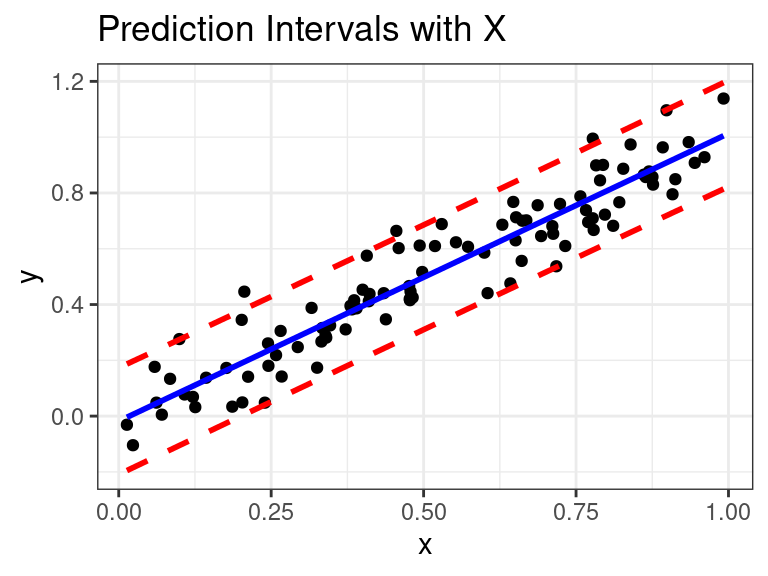
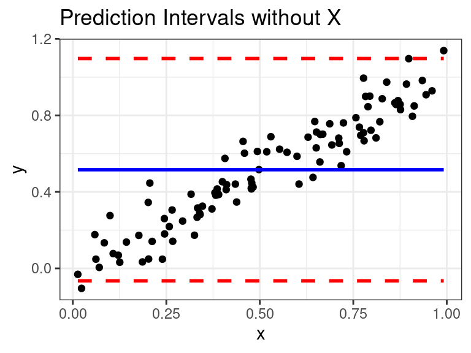

MLR: Model Selection and Validation
David Gerard
2021-11-09
Learning Objectives
- Choosing what variables to include in a model.
- Chapter 12 of Statistical Sleuth.
- Chapter 9 of KNNL
Motivation
You often have many predictor variables.
Including too few and you are potentially not controlling for key variables.
Including too many and your regression coefficient estimates might be unstable.
Model selection: Choosing which variables (and transformations of these variables) to include.
Steps of Selecting a Model
From the Statistical Sleuth:
- Identify the key objectives.
- Screen the available variables, deciding on a list that is sensitive to the objectives and excludes obvious redundancies.
- Steps 3, 4, and 5: Repeat the following until satisfied:
- Perform exploratory analysis, examining graphical displays and correlation coefficients.
- Perform transformations as necessary.
- Examine a residual plot after fitting a rich model, performing further transformations and considering outliers.
- Use a computer-assisted technique for finding a suitable subset of explanatory variables, exerting enough control over the process to be sensitive to the questions of interest.
- Proceed with the analysis, using the selected explanatory variables.
Step 1: Identify Objectives and Questions of Interest
Objective: Association between X and Y controlling for Z
Goal is to determine the association between a response and some interesting predictors after adjusting for other nuisance predictors.
Example: Is there evidence of an association between salary and sex after adjusting for other, legitimate, determinants of salary?
- Association of interest: sex versus salary
- Nuisance variables to adjust for: Seniority, age, education, experience
Generally, a good strategy is to (during steps 6 and 7 from above)
- Perform automatic variable selection techniques with everything except the explanatory variables of interest, then
- Include the explanatory variables of interest to test for associations.
Automatic variable selection techinques destroy the interpretation of \(p\)-values. So
- Do not interpret what set of nuisance variables were chosen,
- Do not interpret the p-values of the nuisance variables
- Do not interpret the the coefficients of the nuisance variables.
- Only interpret the coefficients and p-values corresponding to the variables of interest.
Example: Using automatic selection procedures, it was determined to include experience, seniority, and education, but not age in the final model. After adding in sex, the resulting fit to the final model was
## # A tibble: 5 × 5 ## term estimate std.error statistic p.value ## <chr> <dbl> <dbl> <dbl> <dbl> ## 1 (Intercept) 8.67 0.0955 90.8 9.51e-89 ## 2 Senior -0.00435 0.000944 -4.61 1.38e- 5 ## 3 Educ 0.0164 0.00448 3.66 4.26e- 4 ## 4 Exper 0.000261 0.000107 2.45 1.62e- 2 ## 5 SexMale 0.130 0.0214 6.06 3.30e- 8It is tempting to say that Age is not associated with salary, adjusting for other variables, while the other variables are associated with salary, adjusting for other variables. However, this is wrong.
Since we used an automatic variable selection procedure for Age, Seniority, Education, and Experience, we cannot interpret those coefficients or \(p\)-values.
We can only interpret the coefficient and \(p\)-value for sex, which we did not use a automatic variable selection technique on.
We estimate that females make about 89% the salary of males, adjusting for other, legitimate, predictors of base salary. The evidence is strong that this association is not due to chance alone (\(p = 3.3\times 10^{-8}\)).
Technically, we are also adjusting for age in this statement, even though it was not in the model, because it had the chance to be in the model.
Objective: Fishing
You have a response variable and many explanatory variables, and you want to know what variables are possibly associated with your response.
Then iterate through adding/removing variables, making transformations, checking residuals, until you develop a model with significant terms and no major issues.
\(p\)-values/confidence intervals don’t have proper interpretation.
- Same problems with multiple comparisons — ran many tests and looked at data a lot to come to final model.
You generally build a model and tell stories with it.
Issues:
- Explanatory variables are not necessarily special. Inclusion/exclusion strongly affected by multicollinearity.
- I.e., You are just generating hypotheses, not conclusions.
- Causal interpretations are not allowed, as usual, with observational studies.
- \(p\)-values are meaningless.
- Explanatory variables are not necessarily special. Inclusion/exclusion strongly affected by multicollinearity.
If your dataset is large, then you can split your data into a training set and a test set. You can do whatever variable selection techniques you want on your training set, then fit your final model on your test set to obtain \(p\)-values that have the proper interpretation.
- Test set could be about 25% and the training set about 75%.
- Splitting data is feasible if you have more than 6 observations per predictor variable in the training set.
- As soon as you look at how well your method works on your test set, you can no longer do anything.
- I.e. if you cheat and redo your analysis to better fit the test set, then you are back to the problems of fishing and there was no point in splitting the data in the first place.
Objective: Prediction
Include variables to maximize predictive power, don’t worry about interpretation.
This lecture is not when prediction is the goal.
The automatic variable selection procedures described in this lecture are not often used when the goal is prediction.
Take the Machine Learning course for details when the goal is prediction.
- Typical methods include regularization and cross validation.
Step 2: Screen Available Variables
Choose a list of explanatory variables that are important to the objective.
Screen out redundant variables.
Use your domain expertise for screening variables.
Note: What variables are important will depend on the question being asked.
Example: Researchers were interested in what variables were associated with state average SAT scores. Possible predictors include
Takers: Percentage of high school seniors in the state who took the exam.Income: Median income of families of test-takers (hundreds of dollars).Years: Average number of years test-takers had formal studies.Public: Percentage of test-takers who attended public schools.Expend: Total state expenditure on secondary schools, in hundreds of dollars per student.Rank: Median percentile ranking of test-takers within their secondary school classes.
library(Sleuth3) data("case1201") sat <- case1201 glimpse(sat)## Rows: 50 ## Columns: 8 ## $ State <fct> Iowa, SouthDakota, NorthDakota, Kansas, Nebraska, Montana, Minn… ## $ SAT <int> 1088, 1075, 1068, 1045, 1045, 1033, 1028, 1022, 1017, 1011, 100… ## $ Takers <int> 3, 2, 3, 5, 5, 8, 7, 4, 5, 10, 5, 4, 9, 8, 7, 3, 6, 16, 19, 11,… ## $ Income <int> 326, 264, 317, 338, 293, 263, 343, 333, 328, 304, 358, 295, 330… ## $ Years <dbl> 16.79, 16.07, 16.57, 16.30, 17.25, 15.91, 17.41, 16.57, 16.01, … ## $ Public <dbl> 87.8, 86.2, 88.3, 83.9, 83.6, 93.7, 78.3, 75.2, 97.0, 77.3, 74.… ## $ Expend <dbl> 25.60, 19.95, 20.62, 27.14, 21.05, 29.48, 24.84, 17.42, 25.96, … ## $ Rank <dbl> 89.7, 90.6, 89.8, 86.3, 88.5, 86.4, 83.4, 85.9, 87.5, 84.2, 85.…- Goal 1: Business firm looking for a place to build a new facility. They want to know if SAT scores accurately reflect educational training of the labor market in that state.
- Only care if SAT score is associated with
Rank(the educational training variable) after accounting for selection bias (Takers).
- Only care if SAT score is associated with
- Goal 2: Government wants to determine impact of state expenditures on SAT scores. Then include all variables as possible predictors to so we can see what effect expenditures has that cannot be accounted by other variables.
Problems with Including Too Few Variables
You are only picking up marginal associations.
E.g., we already know that men make more money than women. We want to see if men still make more money than women when we control for other variables.
Predictions are less accurate.


If you fit a model with \(X\), then this is what the model is seeing:

Problems with too many variables
Harder to estimate more parameters.
Formally, the variances of the sampling distributions of the coefficients in the model will get much larger.
Including highly correlated explanatory variables will really increase the variance of the sampling distributions of the coefficient estimates.
Intuitively, we are less sure if the association of \(Y\) and \(X_1\) is due to that actual associate or is it mediated through \(X_2\)?
Predictions are less accurate.
Demonstration when have too many variables
True model: \(E(Y|X_1) = X_1\)
Fit Model: \(E(Y|X_1, X_2) = \beta_0 + \beta_1 X_1 + \beta_2X_2\)
Correlation between \(X_1\) and \(X_2\) is 0.9994.
We will simulate \(Y\) and plot the resulting OLS estimates.
Black is truth

Steps 3 through 5
Exploratory data analysis.
Tons of scatterplots.
Look at correlation coefficients.
Transformations based on EDA.
Fit a rich model and look at residuals.
- Look for curvature, non-constant variance, and outliers.
- Iterate the above steps until you don’t see any issues.
SAT Example
Matrix scatterplot of SAT data
library(GGally) ggpairs(sat, columns = 2:8)Curvature between SAT scores and percentage takers. But it looks like constant variance at first, so maybe taking a log of percentage takers would help.
sat <- mutate(sat, l_takers = log(Takers)) qplot(x = l_takers, y = SAT, data = sat)There is a huge outlier in expenditures caused by Alaska
arrange(sat, desc(Expend)) %>% select(State, Expend) %>% head()## State Expend ## 1 Alaska 50.10 ## 2 NewYork 33.58 ## 3 Massachusetts 31.74 ## 4 Oregon 30.49 ## 5 Montana 29.48 ## 6 Pennsylvania 27.98Let’s fit a rich model to identify any other transformations and other possible issues.
lm_rich <- lm(SAT ~ l_takers + Income + Years + Public + Expend + Rank, data = sat) a_rich <- augment(lm_rich) qplot(x = .fitted, y = .resid, data = a_rich) + geom_hline(yintercept = 0)qplot(x = l_takers, y = .resid, data = a_rich) + geom_hline(yintercept = 0)qplot(x = Income, y = .resid, data = a_rich) + geom_hline(yintercept = 0)qplot(x = Years, y = .resid, data = a_rich) + geom_hline(yintercept = 0)qplot(x = Public, y = .resid, data = a_rich) + geom_hline(yintercept = 0)qplot(x = Expend, y = .resid, data = a_rich) + geom_hline(yintercept = 0)
qplot(x = Rank, y = .resid, data = a_rich) + geom_hline(yintercept = 0)The only worry is the expenditures residual plot where, again, we see Alaska.
In Chapter 10, we will learn about leverage values, and we see that Alaska has a very high Cook’s distance (
.cooksd) and a high leverage (.hat).a_rich %>% bind_cols(select(sat, State)) %>% select(State, .cooksd, .hat) %>% arrange(desc(.cooksd))## # A tibble: 50 × 3 ## State .cooksd .hat ## <fct> <dbl> <dbl> ## 1 Alaska 1.60 0.572 ## 2 Louisiana 0.207 0.345 ## 3 Mississippi 0.152 0.147 ## 4 SouthCarolina 0.146 0.129 ## 5 Tennessee 0.143 0.207 ## 6 WestVirginia 0.0880 0.169 ## 7 NewHampshire 0.0728 0.0913 ## 8 NorthCarolina 0.0437 0.102 ## 9 Indiana 0.0345 0.198 ## 10 Illinois 0.0339 0.106 ## # … with 40 more rowsA high leverage is typically above \(2p/n\), or in this case \(2 * 7 / 50 = 0.28\)
A high Cook’s distance is around or above 1.
Let’s remove Alaska. This is probably OK since Alaska uses expenditures on things like long distance travel for teachers, and higher heating bills, which do not have a direct effect on educational attainment. Thus, this expenditure value is likely not representative of our objective.
sat <- filter(sat, State != "Alaska")We would go through the above steps again to see if everything looks good in our rich model.
This is also the stage where we would include quadratic terms, do other variable transformations, etc.
Step 6: Automated Variable Selection
If appropriate, use an automatic variable selection technique to choose a suitable subset of explanatory variables.
An automatic variable selection technique has a criterion where a higher value indicates a better fit.
The computer adds/deletes variables from the model until it reaches a point where it cannot increase the criterion any more.
The selected model is considered the “best” one.
You need to make sure your “rich” model has no major issues before implementing these approaches.
Most statisticians dislike automatic variable selection approaches, but they can be useful to
- Control for many predictors when your objective is the relationship between a couple key predictors and a response variables, and
- Fishing for hypotheses, as long as you don’t take your results too seriously and always hedge when you present results.
Criteria
- AIC: Akaike’s Information Criterion \[
AIC = n\log\left(\frac{SSE}{n}\right) + 2p
\]
- Lower is better.
- Fit (in terms of SSE) + penalty on the number of parameters.
- As \(p\) increases, SSE decreases, but this is possibly offset by the penalty.
- This is the criterion base R includes by default for stepwise procedures.
- BIC (SBC): The Bayesian information Criterion (aka Schwarz’s Bayesian Criterion) penalizes the parameters a little more than AIC. \[
AIC = n\log\left(\frac{SSE}{n}\right) + \log(n)p
\]
- Lower is better.
- Again, fit + penalty.
- As \(p\) increases, SSE decreases, but this is possibly offset by the penalty.
- Better than AIC when you have not been as careful about deleting redundant predictors.
- Mallows \(C_p\) \[
C_p = p + (n-p)\frac{\hat{\sigma}^2 - \hat{\sigma}^2_{full}}{\hat{\sigma}^2_{full}},
\]
- \(\hat{\sigma}^2\) is the MSE under the model under consideration.
- \(\hat{\sigma}^2_{full}\) is the MSE under the model that uses all possible explanatory variables.
- Lower \(C_p\) is better.
- Mallow’s \(C_p\) is an estimate of the “Total Mean Squared Error” which is the sum of the bias squared and the variance. Small values of Mallow’s \(C_p\) indicate that the model both has low bias and low variance.
- If there is no bias, then \(C_p \approx p\) (since \(\hat{\sigma}^2 \approx \hat{\sigma}^2_{full}\)). So all models withere \(C_p\) is near \(p\) are considered “good” models.
- \(R^2\): \[
R^2 = 1 - \frac{SSE}{SSTO}
\]
- Higher is better (explains more variation..
- Do not use this one for variable selection.
- Recall that \(R^2\) will decrease as we add more predictors, so we cannot use it to compare models with differen numbers of predictors.
- Adjusted \(R_a^2\): Look at whether there is a “plateau” when you add predictors. \[
R^2 = 1 - \frac{SSE/(n-p)}{SSTO/(n-1)}
\]
- Higher is better (explains more variation).
Automated Procedures
“Best” subsets: Look at all possible models given the set of predictors, choose the one with the best criterion.
Forward/Backward Selection: Start with a model with no predictors \(Y_i = \beta_0 + \epsilon_i\).
- Fit all models where you add a predictor. Choose the one that improves the criterion the best.
- Fit all models where you remove a predictor. Choose the one that improves the criterion the best.
- Iterate until you cannot add/remove any more predictors.
The forward/backward approach is not gauranteed to find the model with the “best” criterion.
When you add/subtract a categorical variable, you should add/subtract all of the indicators associated with that categorical variable.
Make sure you also include first-order terms if second order terms are kept in the model.
Step 7: Proceed with Caution
Proceed with analysis with chosen explanatory variables.
Evaluate residual plots for your final model. Perform other model checks.
Tell stories with the data using \(p\)-values, coefficient estimates, confidence intervals, coefficients of determination, etc…
Step 7 is what we’ve been discussing this whole semester.
Implementation in R
You can get AIC, BIC, \(R^2\), and \(R_a^2\) via
glance()from{broom}lm_rich <- lm(SAT ~ l_takers + Income + Years + Public + Expend + Rank, data = sat) glance(lm_rich) %>% select(AIC, BIC, r.squared, adj.r.squared)## # A tibble: 1 × 4 ## AIC BIC r.squared adj.r.squared ## <dbl> <dbl> <dbl> <dbl> ## 1 453. 468. 0.913 0.900No easy default way in R to get \(C_p\). But other software packages use it, so it is good to be aware of.
Use the
step()function to choose a model by AIC/BIC via automated search.- The
objectargument is the intial model that it will search from. - The
scopeargument specifies the simplest and the most complicated models possible.- If you give it a single formula, this is the most complicated model possible.
- If you give it a list of formulas, these are the most complicated and simplest models possible.
- You can use the output of
step()like the output oflm()(viatidy(),augment(), etc).
- The
To use both a lower and upper bound, do:
lm_init <- lm(SAT ~ Income + Years, data = sat) sout <- step(object = lm_init, scope = list(upper = SAT ~ l_takers + Income + Years + Public + Expend + Rank, lower = SAT ~ Income))## Start: AIC=393.9 ## SAT ~ Income + Years ## ## Df Sum of Sq RSS AIC ## + Rank 1 99984 34294 329 ## + l_takers 1 94604 39674 336 ## + Public 1 23088 111190 387 ## <none> 134278 394 ## - Years 1 9072 143350 395 ## + Expend 1 14 134264 396 ## ## Step: AIC=329 ## SAT ~ Income + Years + Rank ## ## Df Sum of Sq RSS AIC ## + Expend 1 10326 23968 313 ## <none> 34294 329 ## + Public 1 759 33535 330 ## + l_takers 1 412 33882 330 ## - Years 1 13581 47876 343 ## - Rank 1 99984 134278 394 ## ## Step: AIC=313.4 ## SAT ~ Income + Years + Rank + Expend ## ## Df Sum of Sq RSS AIC ## + l_takers 1 2552 21417 310 ## <none> 23968 313 ## + Public 1 422 23547 315 ## - Years 1 7353 31322 325 ## - Expend 1 10326 34294 329 ## - Rank 1 110295 134264 396 ## ## Step: AIC=309.9 ## SAT ~ Income + Years + Rank + Expend + l_takers ## ## Df Sum of Sq RSS AIC ## <none> 21417 310 ## + Public 1 20 21397 312 ## - l_takers 1 2552 23968 313 ## - Years 1 3011 24428 314 ## - Rank 1 3162 24578 315 ## - Expend 1 12465 33882 330tidy(sout)## # A tibble: 6 × 5 ## term estimate std.error statistic p.value ## <chr> <dbl> <dbl> <dbl> <dbl> ## 1 (Intercept) 291. 256. 1.14 0.261 ## 2 Income 0.113 0.113 1.01 0.319 ## 3 Years 13.5 5.49 2.46 0.0180 ## 4 Rank 5.06 2.01 2.52 0.0155 ## 5 Expend 3.87 0.774 5.00 0.0000100 ## 6 l_takers -31.2 13.8 -2.26 0.0287To use just an upper bound, do:
lm_init <- lm(SAT ~ Income + Years, data = sat) sout <- step(object = lm_init, scope = SAT ~ l_takers + Income + Years + Public + Expend + Rank)## Start: AIC=393.9 ## SAT ~ Income + Years ## ## Df Sum of Sq RSS AIC ## + Rank 1 99984 34294 329 ## + l_takers 1 94604 39674 336 ## + Public 1 23088 111190 387 ## <none> 134278 394 ## - Years 1 9072 143350 395 ## + Expend 1 14 134264 396 ## - Income 1 84760 219038 416 ## ## Step: AIC=329 ## SAT ~ Income + Years + Rank ## ## Df Sum of Sq RSS AIC ## + Expend 1 10326 23968 313 ## <none> 34294 329 ## + Public 1 759 33535 330 ## + l_takers 1 412 33882 330 ## - Income 1 3322 37616 332 ## - Years 1 13581 47876 343 ## - Rank 1 99984 134278 394 ## ## Step: AIC=313.4 ## SAT ~ Income + Years + Rank + Expend ## ## Df Sum of Sq RSS AIC ## + l_takers 1 2552 21417 310 ## <none> 23968 313 ## + Public 1 422 23547 315 ## - Income 1 3048 27016 317 ## - Years 1 7353 31322 325 ## - Expend 1 10326 34294 329 ## - Rank 1 110295 134264 396 ## ## Step: AIC=309.9 ## SAT ~ Income + Years + Rank + Expend + l_takers ## ## Df Sum of Sq RSS AIC ## - Income 1 505 21922 309 ## <none> 21417 310 ## + Public 1 20 21397 312 ## - l_takers 1 2552 23968 313 ## - Years 1 3011 24428 314 ## - Rank 1 3162 24578 315 ## - Expend 1 12465 33882 330 ## ## Step: AIC=309.1 ## SAT ~ Years + Rank + Expend + l_takers ## ## Df Sum of Sq RSS AIC ## <none> 21922 309 ## + Income 1 505 21417 310 ## + Public 1 185 21737 311 ## - Rank 1 2676 24598 313 ## - Years 1 2870 24792 313 ## - l_takers 1 5094 27016 317 ## - Expend 1 13620 35542 331tidy(sout)## # A tibble: 5 × 5 ## term estimate std.error statistic p.value ## <chr> <dbl> <dbl> <dbl> <dbl> ## 1 (Intercept) 399. 232. 1.72 0.0929 ## 2 Years 13.1 5.48 2.40 0.0207 ## 3 Rank 4.40 1.90 2.32 0.0252 ## 4 Expend 4.00 0.764 5.23 0.00000452 ## 5 l_takers -38.1 11.9 -3.20 0.00257Modify the
kargument to be \(log(n)\) to fit by BICsout <- step(object = lm_init, scope = SAT ~ l_takers + Income + Years + Public + Expend + Rank, k = log(nrow(sat)))## Start: AIC=399.6 ## SAT ~ Income + Years ## ## Df Sum of Sq RSS AIC ## + Rank 1 99984 34294 337 ## + l_takers 1 94604 39674 344 ## + Public 1 23088 111190 394 ## - Years 1 9072 143350 399 ## <none> 134278 400 ## + Expend 1 14 134264 403 ## - Income 1 84760 219038 420 ## ## Step: AIC=336.6 ## SAT ~ Income + Years + Rank ## ## Df Sum of Sq RSS AIC ## + Expend 1 10326 23968 323 ## <none> 34294 337 ## - Income 1 3322 37616 337 ## + Public 1 759 33535 339 ## + l_takers 1 412 33882 340 ## - Years 1 13581 47876 349 ## - Rank 1 99984 134278 400 ## ## Step: AIC=322.9 ## SAT ~ Income + Years + Rank + Expend ## ## Df Sum of Sq RSS AIC ## + l_takers 1 2552 21417 321 ## <none> 23968 323 ## - Income 1 3048 27016 325 ## + Public 1 422 23547 326 ## - Years 1 7353 31322 332 ## - Expend 1 10326 34294 337 ## - Rank 1 110295 134264 403 ## ## Step: AIC=321.3 ## SAT ~ Income + Years + Rank + Expend + l_takers ## ## Df Sum of Sq RSS AIC ## - Income 1 505 21922 319 ## <none> 21417 321 ## - l_takers 1 2552 23968 323 ## - Years 1 3011 24428 324 ## - Rank 1 3162 24578 324 ## + Public 1 20 21397 325 ## - Expend 1 12465 33882 340 ## ## Step: AIC=318.5 ## SAT ~ Years + Rank + Expend + l_takers ## ## Df Sum of Sq RSS AIC ## <none> 21922 319 ## - Rank 1 2676 24598 320 ## - Years 1 2870 24792 321 ## + Income 1 505 21417 321 ## + Public 1 185 21737 322 ## - l_takers 1 5094 27016 325 ## - Expend 1 13620 35542 338tidy(sout)## # A tibble: 5 × 5 ## term estimate std.error statistic p.value ## <chr> <dbl> <dbl> <dbl> <dbl> ## 1 (Intercept) 399. 232. 1.72 0.0929 ## 2 Years 13.1 5.48 2.40 0.0207 ## 3 Rank 4.40 1.90 2.32 0.0252 ## 4 Expend 4.00 0.764 5.23 0.00000452 ## 5 l_takers -38.1 11.9 -3.20 0.00257